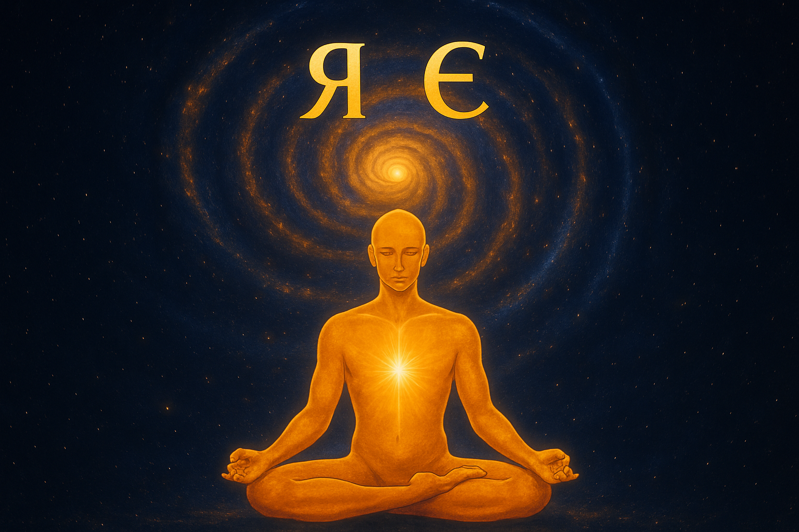

Місце для запитань і відкриттів
Поглянь на себе і своє життя інакше.
Чому в одних ситуаціях ти дієш упевнено, а в інших губишся? Чому повторюються схожі проблеми? Чи завжди ти бачиш всі можливі рішення?
«Я є» — простір для дослідження себе, своїх думок, поведінки та життєвих ситуацій. Тут можна не лише читати, а й спробувати практичні інструменти.

Людина первинна. Її опис — вторинний. Якщо спостереження суперечать моделі, переглядаємо модель, а не підганяємо під неї людину.
Що привело тебе сюди?
Не обов’язково починати з тесту

Роздуми, тексти, спостереження
Не все вкладається в тести
Деякі запитання потребують не відповіді з переліку, а іншого погляду. Тут є авторські статті, роздуми та місце для сумніву.
Мій погляд на світІ серйозно, і не зовсім
Місце для гумору теж є
Самопізнання — не причина весь час ходити з насупленим чолом.
Зайти в гумор